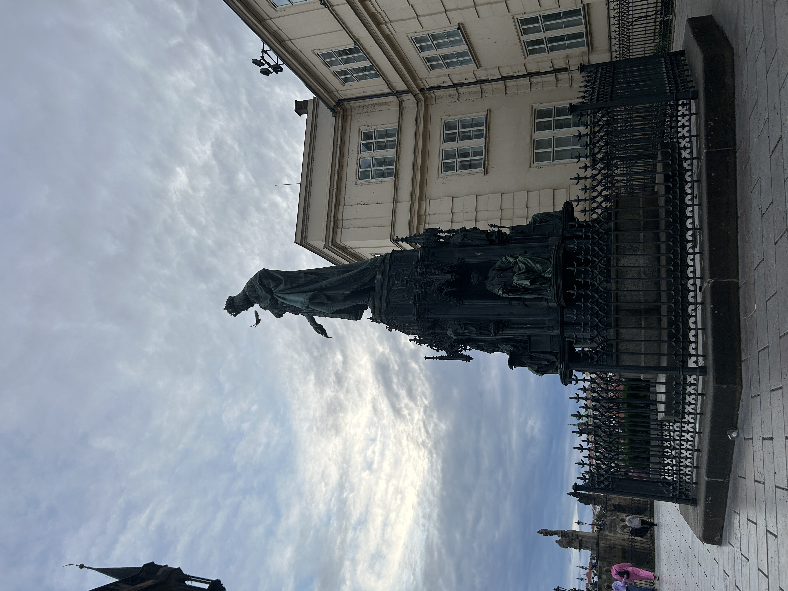
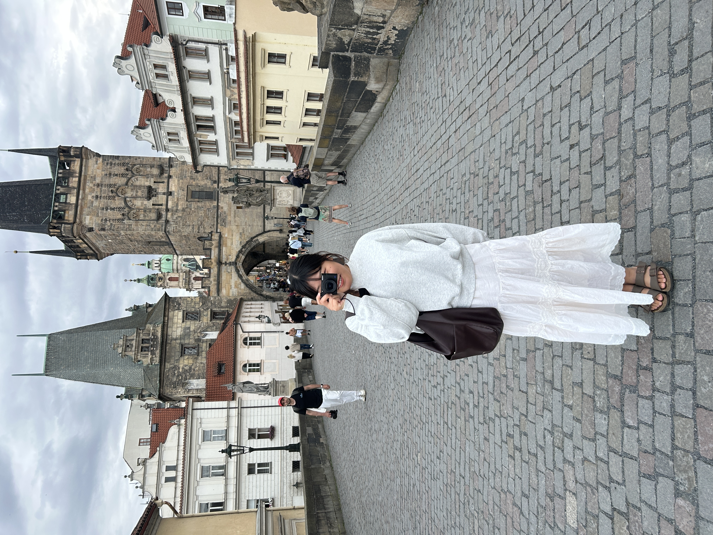
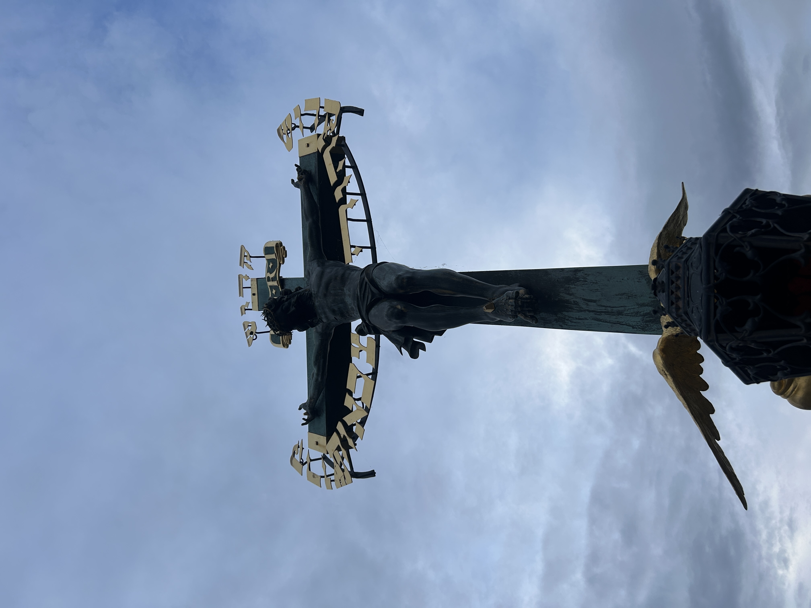

The Charles Bridge crosses over the Vltava River, connecting the Old Town with the Lesser Town. It's lined with statues of Catholic saints and other historical figures. At the Old Town entrance stands a grand statue of Charles IV, King of the Holy Roman Empire.
This historic Gothic stone arch bridge began construction in 1357 under the patronage of the aforementioned Emperor, the namesake of the bridge.
Like many locations in Prague, the bridge was bustling with tourists from all over the world, especially European tourists. I recommend visiting the bridge early in the morning to avoid the crowds.

